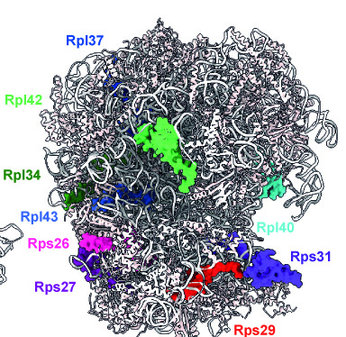
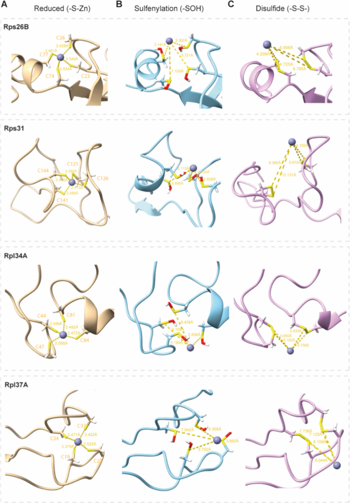
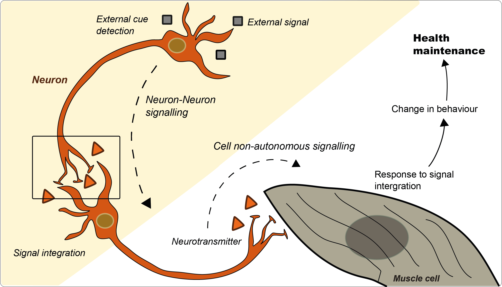

Aging is accompanied by an early and progressive decline in proteostasis—the cellular network that maintains protein quality and function—contributing to functional deterioration and age-associated disease. Our lab aims to understand the molecular mechanisms that drive this early loss of proteostasis with a particular focus on the consequences of oxidative stress on the proteome. We integrate biochemical, genetic, and quantitative proteomics approaches in Saccharomyces cerevisiae and Caenorhabditis elegans to understand principles of proteostasis control.
Current research focus
Cross species comparison of oxidation changes during aging
Protein oxidation landscapes during aging
Oxidative stress is a universal phenomenon during cellular aging influencing protein structure, function, and stability. We investigate how oxidative protein modifications change during aging
and how they contribute to the decline of cellular proteostasis. By combining proteomics with targeted biochemical approaches, we aim to map these modifications, distinguish reversible from
irreversible changes, and identify proteins that may be particularly vulnerable to age-related oxidation. Explore our database to discover patterns of reversible thiol oxidation during aging.
Further reading
Jonak et al. LSA, 2024

Protein synthesis regulation during aging
The ribosome regulates proteostasis by tuning protein synthesis in response
to cellular conditions and is a hub for regulating longevity. We study the
impact of oxidative modifications on ribosomal proteins as well as changes
in ribosome composition and ribosome associated proteins during stress and aging. How is the ribosome
different in young and aged cells? How does composition impact translation and
translational output? What are the consequences for cellular proteostasis?
Further reading
Zadali et al, NAR, 2025
Topf, FEBS Journal, 2026
Liput et al, bioRxiv, 2026

Ribosomes in zinc homeostasis
Zinc is essential for protein structure, cellular function, and proteostasis, yet its availability changes during aging. We investigate how ribosomal proteins contribute
to zinc homeostasis and how zinc availability influences ribosome composition, protein synthesis, and cellular health. By exploring the interplay between zinc metabolism and
ribosome function, we aim to uncover mechanisms that connect micronutrient balance with proteostasis and healthy aging.
Further reading
Jonak and Topf, Redox Biology, 2026
Kumar et al, bioRxiv, 2026

Modulating healthspan via drug repurposing and micronutrients
We aim to modulate healthspan by repurposing approved drugs and optimizing micronutrient availability to enhance cellular
resilience during aging. By developing molecular sensors and scalable healthspan screens, we want to systematically identify
interventions that improve physiological function and stress resistance in aging models.
Further reading
Gowda et al, Cell Commun Signal, 2026
Our research is funded by

Ongoing projects
- 2025/09/X/NZ3/01522 (Miniatura-9; PI: Arun Kumar)
-
2022/47/D/NZ3/01740
(Sonata-18; PI: Katarzyna Jonak)
Investigation of cellular responses to ribosomal protein oxidation during ageing -
2022/45/B/NZ1/03714
(Opus-23; PI: Ulrike Topf)
Molecular function of zinc storage in ribosomal proteins of eukaryotic cells -
2019/34/E/NZ1/00367
(Sonata Bis-9; PI: Ulrike Topf)
How does ribosome heterogeneity contribute to cellular stress defense?
Completed projects
- 2022/06/X/NZ1/00757 (Miniatura-6; PI: Kamila Liput)
- DEC-MG-05-22-03 (IBB internal grant to Kamila Liput)
-
2018/31/B/NZ1/02401
(Opus-16; PI: Ulrike Topf)
Characterisation of function and substrate binding of the prefoldin chaperone in physiology and cellular stress -
2015/19/B/NZ1/03444
(Opus-10; PI: Ulrike Topf)
Mechanisms protecting from oxidative damage during aging - DEC-MG-4/22-03 (IBB internal grant to Katarzyna Jonak)